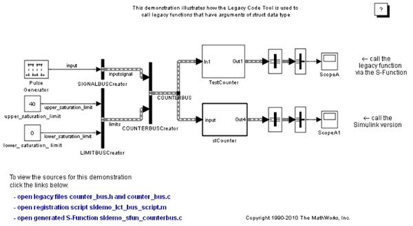
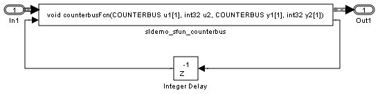
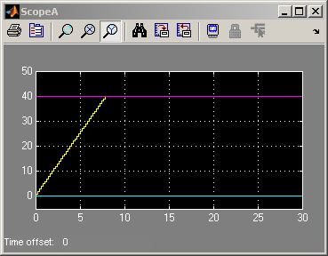
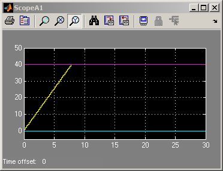

構造体引数を持つレガシ関数によるバスの使用
このデモでは、Simulink® バスを使用した構造体引数を持つレガシ C 関数を Legacy Code Tool によって統合する方法を示します。
Legacy Code Tool を使用すると、以下のことができます。
- レガシ関数の仕様を提供する。
- レガシ コードを呼び出すためにシミュレーション時に使用される C-MEX S-function を生成する。
- 生成された S-function をシミュレーション向けにコンパイルし、ビルドする。
目次
レガシ関数の仕様を提供
Legacy Code Tool に装備されているすべての関数で、特定のデータ構造体または構造体の配列を引数として使用します。このデータ構造体は、1 番目の入力として initialize を使用して関数 legacy_code() を呼び出すことで初期化されます。構造体の初期化後、統合されるレガシ コードに対応する値に、構造体のプロパティを割り当てる必要があります。プロパティの詳細なヘルプは、legacy_code('help') を呼び出してください。このデモで呼び出されるレガシ関数のプロトタイプは以下のとおりです。
counterbusFcn(COUNTERBUS *u1, int32_T u2, COUNTERBUS *y1, int32_T *y2)
ここで COUNTERBUS は、counterbus.h で定義されている struct typedef であり、ベース ワークスペース内で Simulink.Bus オブジェクトによって実装されます。レガシ ソース コードは、ファイル counterbus.h と counterbus.c にあります。
evalin('base','load sldemo_lct_data.mat') % sldemo_sfun_counterbus def = legacy_code('initialize'); def.SFunctionName = 'sldemo_sfun_counterbus'; def.OutputFcnSpec = 'void counterbusFcn(COUNTERBUS u1[1], int32 u2, COUNTERBUS y1[1], int32 y2[1])'; def.HeaderFiles = {'counterbus.h'}; def.SourceFiles = {'counterbus.c'}; def.IncPaths = {'sldemo_lct_src'}; def.SrcPaths = {'sldemo_lct_src'};
シミュレーション時に使用される S-function の生成とコンパイル
入力引数 def によって示される説明に従って C-MEX S-function の生成とコンパイルを自動的に行うために、1 番目の引数を generate_for_sim に設定して関数 legacy_code() が再び呼び出されます。この S-function は、シミュレーションでレガシ関数を呼び出すときに使用されます。S-function のソース コードは、ファイル sldemo_sfun_counterbus.c にあります。
legacy_code('generate_for_sim', def);
### Start Compiling sldemo_sfun_counterbus
mex('B:\matlab\toolbox\simulink\simdemos\simfeatures\sldemo_sfun_counterbus.c', 'B:\matlab\toolbox\simulink\simdemos\simfeatures\sldemo_lct_src\counterbus.c', '-IB:\matlab\toolbox\simulink\simdemos\simfeatures\sldemo_lct_src', '-IB:\matlab\toolbox\simulink\simdemos\simfeatures', '-IB:\matlab\toolbox\simulink\simdemos\simfeatures\html')
### Finish Compiling sldemo_sfun_counterbus
### Exit
コード生成用の rtwmakecfg.m ファイルの生成
TLC ブロック ファイルの作成後、Real Time Workshop を介したコード生成をサポートする rtwmakecfg.m ファイルを生成するために、1 番目の入力を rtwmakecfg_generate に設定して関数 legacy_code() を再び呼び出すことができます。このファイルが必要になるのは、S-function にとって必要なソース ファイルとヘッダー ファイルが S-function と同じディレクトリにない場合に、コード生成時に作成される makefile 内にこれらの依存関係を追加したいときのみです。
メモ: この手順は、モデルのシミュレーションをアクセラレータ モードで実行する場合にのみ必要です。
legacy_code('rtwmakecfg_generate', def);
生成された S-function を呼び出すためのマスクされた S-function ブロックの生成
C-MEX S-function ソースのコンパイルが終了したら、S-function を呼び出すように設定されたマスクされた S-function ブロックを生成するために、1 番目の入力を slblock_generate に設定して関数 legacy_code() を再び呼び出すことができます。このブロックは新しいモデルに配置されますが、既存のモデルにコピーすることもできます。
% legacy_code('slblock_generate', def);
レガシ コードとの統合のデモ
モデル sldemo_lct_bus は、レガシ コードとの統合を示しています。サブシステム TestCounter は、レガシ C 関数の呼び出しに利用できます。
open_system('sldemo_lct_bus') open_system('sldemo_lct_bus/TestCounter') sim('sldemo_lct_bus')   